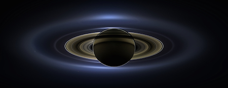
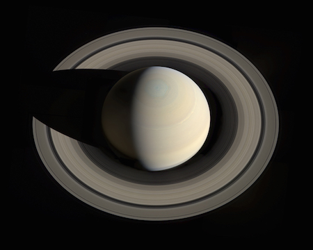

What does Saturn look like?

The Cassini spacecraft took this picture of Saturn's rings. You can see the grey and tan colors.

This is a picture of Saturn and its moons Tethys and Dione. Voyager 1 took this picture as it passed by.

NASA's Cassini spacecraft went behind Saturn and took this picture in 2013. You can see seven of its moons and its inner rings. In the background you can also see Earth.

A portrait looking down on Saturn and its rings. This picture was made from images taken by NASA's Cassini spacecraft in 2013. It was put together by amateur image processor and Cassini fan Gordan Ugarkovic.